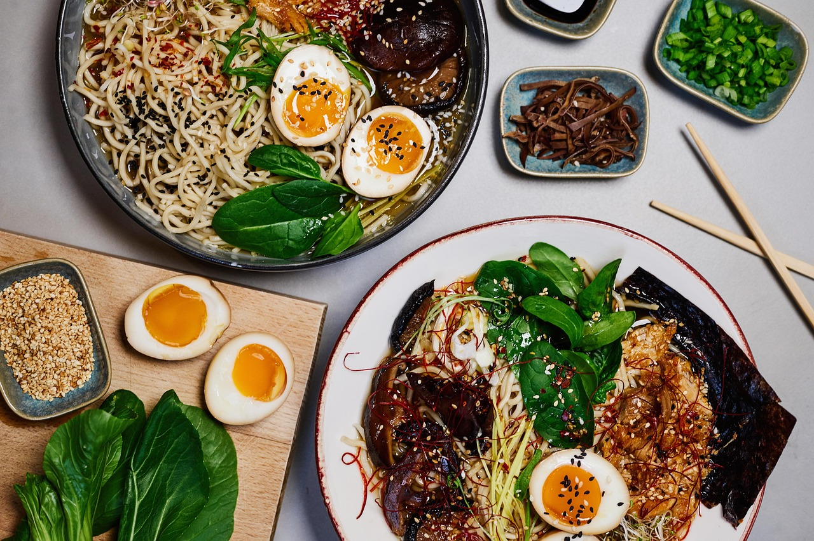

Schnelle Ramen Suppe

 20 Min.
20 Min.
 einfach
einfach
 10.02.2025
10.02.2025
Zutaten für
| 200 g | Ramennudeln |
| 2 St | Pak Choi, geviertelt |
| 1 | Paprika, in Streifen geschnitten |
| 2 | Handvoll Pilze, in Scheiben geschnitten |
| 1 | Bund Koriander, gehackt |
| Salz & Pfeffer | |
| 2 EL | Sesamkörner |
| 2 EL | Sojasauce |
| 1 | Saft einer Limette(n) |
| 1 TL | Currypaste |
| 1 TL | Misopaste |
| 400 ml | Brühe |
| 400 ml | Kokosmilch |
| 2 | Eier |
Zubereitung
 10 Min.
10 Min.
 Gesamtzeit: 20 Min.
Gesamtzeit: 20 Min.
Die Eier in kochendem Wasser 6 Minuten kochen. Die Nudeln, das Gemüse und die Pasten in eine Pfanne geben. Mit Brühe und Kokosmilch aufgiessen. Kurz aufkochen lassen. Mit Koriander, Limettensaft, Sojasauce und Sesamkernen garnieren. Die Eier halbieren und auf die Suppe legen.
Rezept erstellt von

Tom